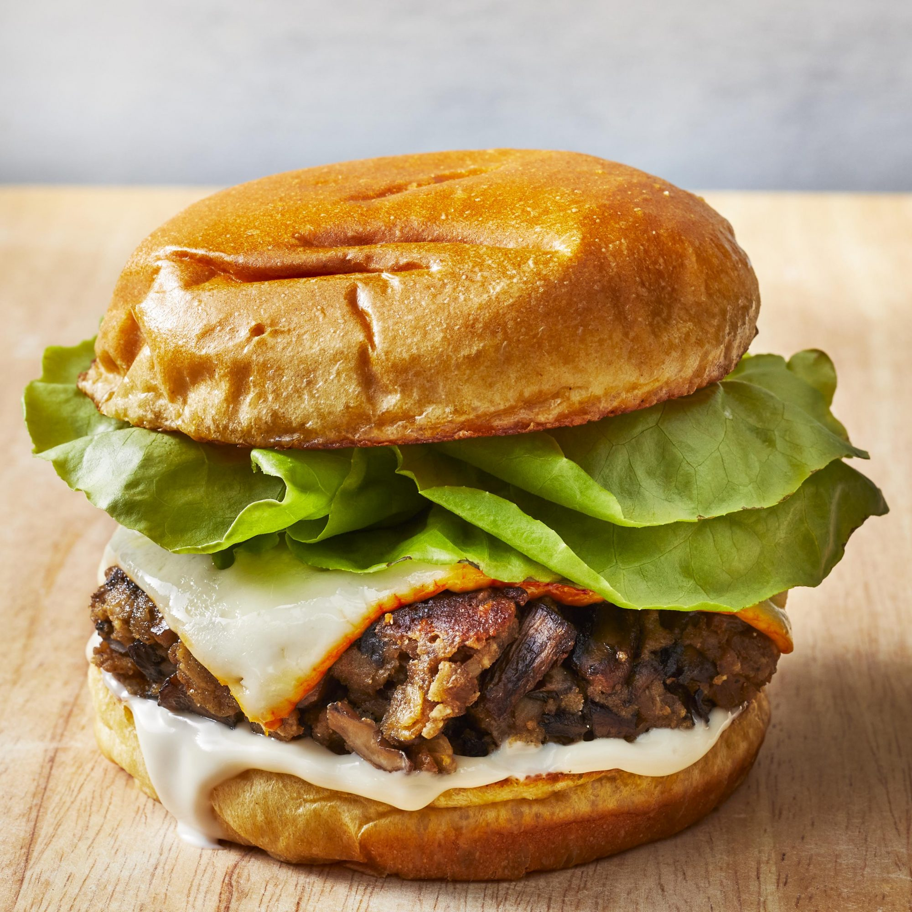

Mushroom Veggie Burger

Description
This is as close as I've ever gotten to a delicious non-meat burger. Mushrooms really give this a meaty flavor. I
serve this like I serve a regular burger, on a nice fresh hamburger roll with spicy mayonnaise and a little
lettuce.
Ingredients
- 2 tablespoons olive oil
- 3 (8 ounce) packages sliced fresh mushrooms
- ½ onion, finely chopped
- 4 cloves garlic, minced
- 1 teaspoon salt
- ½ teaspoon black pepper
- ½ teaspoon dried oregano
- ⅔ cup rolled oats
- ¾ cup dry bread crumbs
- 2 eggs, beaten
- ½ cup freshly shredded Parmigiano-Reggiano cheese
- 2 tablespoons olive oil
Steps
- Heat 2 tablespoons olive oil in a large skillet over medium heat; add mushrooms, onion, and garlic to the
hot oil and season with salt, black pepper, and oregano. Cook and stir mushroom mixture until mushrooms have
given up their juice and the juice has almost evaporated, about 10 minutes. Transfer cooked mushrooms to a
cutting board and chop into small chunks with a knife.
- Transfer mushrooms to a large bowl. Mix in rolled oats and bread crumbs; taste for salt and black pepper and
add more to taste. Stir Parmigiano-Reggiano cheese into the mixture, followed by eggs. Let mixture stand for
the crumbs to soak up excess liquid, about 15 minutes. (At this point you can refrigerate the mixture to
cook later if desired.) Moisten hands with a little vegetable oil or water, pick up about 1/4 cup of
mixture, and form into burgers.
- Heat remaining 2 tablespoons olive oil in a skillet over medium heat and pan-fry burgers until browned and
cooked through, 5 to 6 minutes.